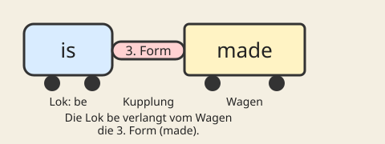
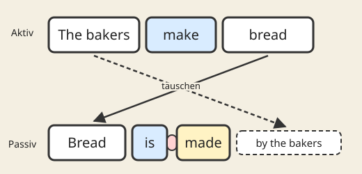

Das Passiv: is made, was made
Mit einem KI-Tutor lernen
Ein KI-Tutor erklärt dir diese Seite und hilft dir bei den Aufgaben. Wähl deinen Assistenten:
Mit Claude öffnen Mit ChatGPT öffnen Mit Mistral Vibe öffnen
Du nutzt dein eigenes Konto beim Anbieter. Der Assistent ist kein Angebot von lernapps.net: lernapps liefert nur Inhalte und Aufgaben. Die Wahl gilt für alle Seiten, nur auf diesem Gerät.
Die Schulzeitung berichtet
Die „Millbrook Times“ berichtet vom Herbstfest. Der Bericht erzählt, was beim Fest geschah, und oft auch, wer es getan hat.
Das kannst du danach: Sätze im Passiv bilden (is made, was made) und mit by sagen, wer etwas getan hat.
Aufgabe
Lösung
drunk richtige Antwort
Genau: drink – drank – drunk. In dieser Form fährt später der Wagen im Passiv.
drank
Drank ist die Vergangenheit (simple past). Die dritte Form ist die letzte der drei Formen.
drinked
Drink ist ein unregelmäßiges Verb und bekommt kein -ed. Solche Verben lernst du in drei Formen.
Die drei Formen von drink sind drink, drank, drunk. Die dritte Form brauchst du in diesem Kapitel immer wieder.
Millbrook Times: Der Bericht
Millbrook Times · Monday, 21 September · A fair for everyone
Last Saturday the autumn fair was held in the main hall. It was organised by Mr Hill's class, and the hall was decorated with paper flags. A big stage was built by the older students. About two hundred people were welcomed at the door. Hot drinks were made in the school kitchen, and biscuits were baked by the parents.
| Englisch | Beispiel · Hinweis | Deutsch |
|---|---|---|
| hold, held, held | A concert is held in the park every summer. Jeden Sommer wird im Park ein Konzert veranstaltet. | abhalten, veranstalten |
| organise | organisieren | |
| decorate | We decorated the room with balloons. Wir haben den Raum mit Luftballons geschmückt. | schmücken |
| a stage | eine Bühne | |
| welcome | Our teacher welcomes us every morning. Unser Lehrer begrüßt uns jeden Morgen. | begrüßen, willkommen heißen |
Aufgabe
Lösung
Richtige Antwort: Die Aussage stimmt nicht.
Die Bühne wurde von den älteren Schülern gebaut.
A lot of food was sold at the stalls. Mrs Parker's carrot cake was eaten in ten minutes! Tea and coffee were served by the parents, and the money was collected in a big jar. As every year, it is used for new books for the school library.
| Englisch | Beispiel · Hinweis | Deutsch |
|---|---|---|
| a stall | ein Verkaufsstand | |
| serve | Lunch is served at noon. Das Mittagessen wird um zwölf Uhr serviert. | servieren, ausgeben |
| collect | Peter collects football cards. Peter sammelt Fußballkarten. | sammeln, einsammeln |
| a jar | ein Glas (zum Aufbewahren) |
Aufgabe
Lösung
Für neue Bücher in der Schulbibliothek. richtige Antwort
Im Bericht steht, dass das Geld für neue Bücher benutzt wird.
Für eine neue Bühne.
Die Bühne wurde von den älteren Schülern gebaut. Mit dem Geld hat sie nichts zu tun.
Für Papierfahnen.
Die Papierfahnen hingen schon in der Halle. Von Geld dafür steht nichts da.
Das Geld wird für neue Bücher in der Schulbibliothek benutzt.
In the afternoon a short play was performed by Sophie, Ellie and Amir. Peter's drawings were shown on the wall, and a prize was won by his class. Then the fair was finished with a song, and the hall was cleaned by everybody. Everybody says it was the best fair of the year.
| Englisch | Beispiel · Hinweis | Deutsch |
|---|---|---|
| perform | aufführen, vorführen | |
| a play | ein Theaterstück | |
| a prize | ein Preis | |
| win, won, won | gewinnen | |
| finish with a song | We finish every lesson with a game. Wir beenden jede Stunde mit einem Spiel. | mit einem Lied enden |
Verstehen, belegen, meinen
Aufgabe
Lösung
Sie haben ein kurzes Theaterstück aufgeführt. richtige Antwort
Im Bericht steht, dass ein kurzes Stück von den dreien aufgeführt wurde.
Sie haben Kuchen verkauft.
Der Kuchen kam von Mrs Parker, und das Essen wurde an den Ständen verkauft. Von den dreien steht dort nichts.
Sie haben die Bühne gebaut.
Die Bühne haben die älteren Schüler gebaut.
Sophie, Ellie und Amir haben am Nachmittag ein kurzes Stück aufgeführt.
Aufgabe
Lösung
Mrs Parker's carrot cake was eaten in ten minutes! richtige Antwort
In ten minutes heißt „in zehn Minuten“. So schnell war der Kuchen weg.
A lot of food was sold at the stalls.
Der Satz sagt nur, dass viel Essen verkauft wurde. Nach der Zeit wird nicht gefragt.
The money was collected in a big jar.
Dieser Satz handelt vom Geld und nicht vom Kuchen.
Der Satz mit in ten minutes belegt, dass der Kuchen schnell weg war.
Offene Aufgabe
Welche Aufgabe hättest du beim Herbstfest am liebsten übernommen? Schreibe zwei bis drei Sätze auf Deutsch oder Englisch und nenne einen Grund.
Eine gute Antwort enthält:
- Eine klare Aussage, welche Aufgabe du übernehmen würdest. (Form)
- Ein Grund, warum du diese Aufgabe gewählt hast. (Form)
Lösung
Ich hätte am liebsten die Bühne gebaut, weil ich gern mit Holz arbeite und man am Ende sieht, was man geschafft hat.
be und die dritte Form
Im Aktiv steht vorn, wer etwas tut: The bakers make bread. Im Passiv kommt das nach vorn, was getan wird: Bread is made. Wer es getan hat, wird klein (by the bakers) oder fällt ganz weg. Das Passiv benutzt du, wenn das Ergebnis wichtiger ist als der Täter, zum Beispiel in Berichten.
In der Verbkette ist das eine neue Kupplung. Beim Passiv ist be die Lok (is, are, was, were). Die Kupplung zeigt, welche Form die Lok vom Wagen verlangt: Der Wagen fährt in der dritten Form (made).

Von links: Lok is (eine Form von be), Kupplung 3. Form, Wagen made. Die Lok verlangt vom Wagen die dritte Form.
Quelle: eigene Zeichnung. Lizenz: CC-BY-4.0.
Beim Umdrehen tauschen bread und the bakers die Plätze. Aus make wird die Kette is made, und der Täter wird klein und bekommt by.
Quelle: eigene Zeichnung. Lizenz: CC-BY-4.0.| Zeit | Aktiv | Passiv |
|---|---|---|
| simple present | The bakers make bread. | Bread is made by the bakers. |
| simple present | People speak English here. | English is spoken here. |
| simple past | The bakers made the rolls. | The rolls were made by the bakers. |
| simple past | Someone painted the walls. | The walls were painted. |
Merke
Das Passiv bildest du mit be + dritte Form. Die Lok is, are, was oder were zeigt die Zeit und richtet sich nach dem Wort vorn: The roll is made, aber The rolls are made.
Bei regelmäßigen Verben ist die dritte Form wie die Vergangenheit (painted). Bei unregelmäßigen Verben lernst du sie: make – made – made, speak – spoke – spoken.
Wer etwas getan hat, steht hinter by, nie hinter from. Ist der Täter unbekannt oder unwichtig, lässt du by … weg.
Übung
Aufgabe
Lösung
Richtige Antwort: Amir writes the letter. – The letter is written by Amir.; Peter broke the cup. – The cup was broken by Peter.; Mrs Parker bought the biscuits. – The biscuits were bought by Mrs Parker.
Die Lok zeigt Zeit und Zahl (is, was, were), und der Wagen fährt in der dritten Form.
Aufgabe
Welche Form gehört in die Lücke?
Tipp
Prüfe drei Dinge: Zeigt die Lok die Vergangenheit (was, were) oder die Gegenwart (is, are)? Steht das Wort vorn für eins (was, is) oder für mehrere (were, are)? Und fährt der Wagen in der dritten Form (bei see, take, draw nicht -ed, nicht die Grundform)?
- Der Film wurde von vielen Kindern gesehen. → The film … by many children.
- Die Fotos werden von Amir gemacht. → The photos … by Amir.
- Die Bilder wurden von Ellie gezeichnet. → The pictures … by Ellie.
- Die Tasche ging am Montag verloren. → The bag … on Monday.
Lösung
- The film was seen by many children.
- The photos are taken by Amir.
- The pictures were drawn by Ellie.
- The bag was lost on Monday.
Die Lok richtet sich nach Zeit und Zahl (is, are, was, were), der Wagen fährt in der dritten Form.
Aufgabe
Lösung
Richtige Antwort: 1. The, 2. soup, 3. was, 4. cooked, 5. by, 6. Ellie.
Erst kommt das, was getan wurde (The soup), dann die Lok was, dann der Wagen cooked in der dritten Form und zuletzt der Täter mit by.
Aufgabe
Dreh den Satz um: Schreibe ihn im Passiv und nenne den Täter mit by.
- Ellie sent the postcards.
- Amir found the key yesterday.
- Mr Hill checks the tests.
Lösung
- The postcards were sent by Ellie.
- The key was found by Amir yesterday. (auch richtig: Yesterday the key was found by Amir.; The key was found yesterday by Amir.)
- The tests are checked by Mr Hill.
Aufgabe
Hör zu und schreibe, was du hörst.
- KI
- KI
- KI
Lösung
- Football is played in the park every Sunday.
- The gate was closed at night.
- Our class was invited to the party.
Selbst sagen und schreiben
Aufgabe
Hör zu, sprich nach und nimm dich auf. Vergleiche dann mit dem Original.
Tipp
Hör zuerst zu, sprich dann nach und vergleiche.
- The museum is closed on Mondays.KI
- My bike was washed by my brother.KI
- Is this game played in your country?KI
Zum Aufnehmen braucht diese Aufgabe JavaScript. Die Beispiele kannst du auch ohne anhören.
Lösung
- The museum is closed on Mondays.
- My bike was washed by my brother.
- Is this game played in your country?
Offene Aufgabe
Du schreibst für die Schulzeitung über ein Fest an deiner Schule (es darf erfunden sein). Schreibe drei Sätze im Passiv. Nenne in mindestens einem Satz den Täter mit by.
Eine gute Antwort enthält:
Lösung
The room was decorated by the class. The tickets were sold at the door. The games are organised by the teachers.
Wie es weitergeht
Das nächste Fest wird schon geplant. Auf der nächsten Seite liest du einen Chat darüber, was schon erledigt ist und was noch fehlt, und lernst, wie das Passiv auch mit has been, will be und can be funktioniert.
Fehler gefunden oder eine Idee für diese App?